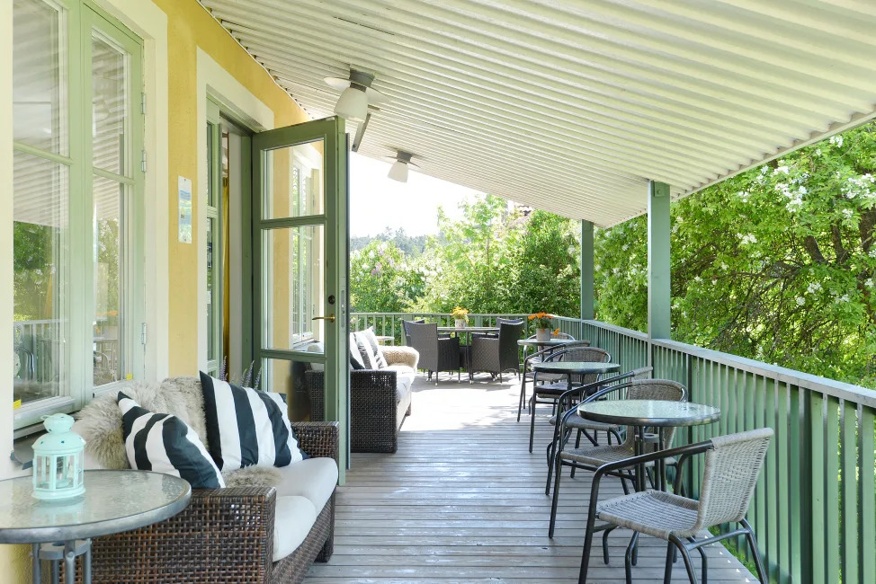
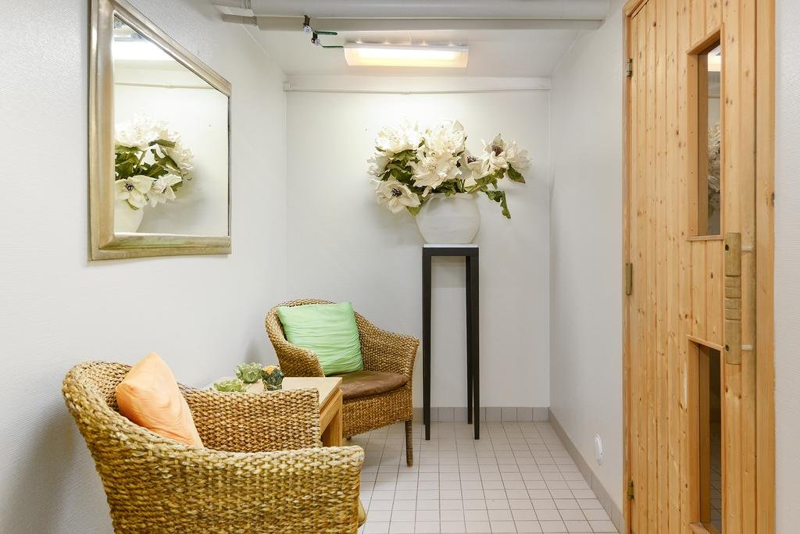

+46 (8) 600 5900
The hotel is located in the idyllic and quiet residential area of Enskede, an area with charming
surroundings
just south of Stockholm city center. If you are traveling for business you will find both The Globe and
Tele2 Arenas and the Stockholm International Trade Fair within easy reach.
The Svedmyra underground (Metro/Subway) station is just steps away, providing easy access to all areas of
the town, including Stockholm central station T-centralen with both Skavsta Airport buses and Arlanda
Airport Express trains.
Maude's Hotel Enskede Stockholm is non-smoking for our guests pleasure, and interiors are both spacious and
contemporary, enhanced by a wealth of comfortable comforts. In the hotel lounge or on the beautiful summer
terrace you can enjoy a cup of coffee or a drink during the day or in the evening. Our multilingual staff
are delighted to be of assistance with the questions and queries that you might have during your stay with
us. You can also take full advantage of a complimentary private parking area, wireless Internet connection
and newspapers in the lobby.
Stockholm is built on 14 islands connected by 57 bridges. The Old Town was first occupied in about 1000 AD
by the vikings. The city is said to be founded by Birger Jarl in 1252. The first part in the name Stock
means log in Swedish and the second part holm means islet.
With its rich cultural life, Stockholm offers a wide selection of museums and attractions. Climb the tower
of Stockholm City Hall for a fantastic view of Stockholm and see the great hall that host the Nobel dinner
every year. Don't forget to visit Gamla Stan, Stockholm's oldest attraction and one of the best preserved
medieval city centers in the world. Discover the small charming streets with stores full of handicrafts,
antiques, art galleries and restaurants, bars and cafés and last but not least, The Royal Palace. The
Wasamuseum and ABBA museum attracts tens of thousands of visitors each year and don't miss out on a boat
trip in the Stockholm archipelago.